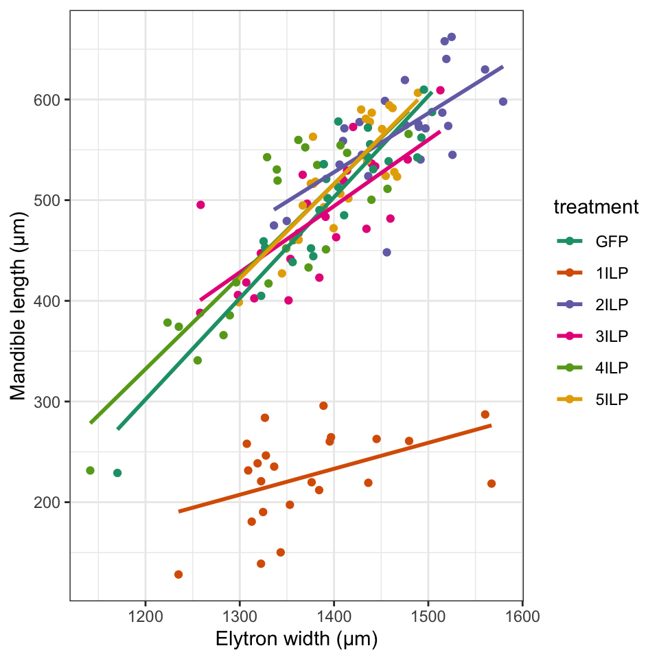

Models combining factors and continuous explanatory variables
You should now be starting to feel familiar with fitting linear models with multiple explanatory variables. Up to this point, however, we’ve focussed on either multiple factors (tutorial 4) or multiple continuous variables (tutorial 5). The next step, of course, is to fit models with both factors and continuous variables. People often find these difficult to interpret, but the trick is to remember that a model with a factor and a continuous explanatory variable is essentially fitting a series of lines, one for each factor level, with the slope being determined by the relationship between the continuous variable and the response variable. If there is no interaction then the lines will all share a common slope, with the differences in intercept being determined by the factor levels. An interaction term in a model with a factor and a continuous variable means that the lines are fitted with a different slope for each level of the factor.
Exercise 1: pinniped brains and mating systems
Let’s start with an fairly straightforward example. This comes from a study of brain size and mating type in pinnipeds (seals, sealions and walruses) published in 2012 by John Fitzpatrick and coauthors1. As part of a study of how mating system might impact on the evolution of brain and body size, Fitzpatrick et al. collected data on brain and body size and mating system for males and females from 33 species of pinniped. The data are available on github as a .csv file at https://github.com/rjknell/Linear_models/raw/master/data/Pinniped_brains.csv. Start by importing the data and saving it as an object called pinnipeds, and then checking the import with the str() function.
# You need to use the read.csv() function
# to import the data.# Don't forget to put the file path (in this
# case the URL) in quote marks# This is the solution
pinniped <- read.csv("https://github.com/rjknell/Linear_models/raw/master/data/Pinniped_brains.csv")
str(pinniped)We’re interested here in the relationship between body mass and brain mass for males, and how it relates to the intensity of sexual selection each species experiences. The latter is indicated here by a variable called Mate_type which has two values. mono indicates species where the males are monogynous, pairing with a single female at a time, whereas poly indicates species with polygynous males which defend groups of females against rival males during the breeding season. Polygynous males are expected to experience stronger sexual selection during the breeding season.

Two male pinnipeds (Cape Fur Seals Arctocephalus pusillus, actually a species of sealion) competing for territory in which to defend a group of females. Photo copyright Rob Knell 2019.
Before going any further we should do some exploratory analysis. In this case a scatterplot of Male_brain_g versus Male_mass_Kg would be appropriate, and you can colour-code it for Mate_type by firstly declaring Mate_type to be a factor and then specifying col = Mate_type as an argument in your plot() function call. Since we’re just doing some exploratory analysis we won’t worry about a legend — because poly comes after mono in the alphabet the poly data will be coded red and the mono data black. Don’t forget to label the axes appropriately.
# Make `Mate_type` into a factor by using the
# as.factor() function:
pinniped$Mate_type <- as.factor(pinniped$Mate_type)# This is the solution
pinniped$Mate_type <- as.factor(pinniped$Mate_type)
plot(Male_brain_g ~ Male_mass_Kg,
col = Mate_type,
data = pinniped,
xlab = "Male mass (Kg)",
ylab = "Brain mass (g)")
What do you conclude from this plot?
Click here for more on the exploratory analysis
Both variables are strongly positively skewed and it’s going to be necessary to correct this with a transformation before proceeding further. Given the nature of the data and the strong positive skew a log transformation would be appropriate: try to generate a new plot like the previous one but with both variables logged. NB neither variable has any zeros so no need to add a constant.
plot(Male_brain_g ~ Male_mass_Kg,
col = Mate_type,
data = pinniped)# Just use the log() function on each variable.
# Alternatively, use the log = "xy" argument # This is the solution
#
plot(log(Male_brain_g) ~ log(Male_mass_Kg),
col = Mate_type,
data = pinniped,
xlab = "Log of male mass (Kg)",
ylab = "Log of brain mass (g)")The log transformation seems to have sorted out the problems associated with the very skewed data. Now to fit a model. We’d like the main effects of both Male_mass_Kg and Mate_type, plus their interaction. Don’t forget to log both of the variables that require transformation, and call your fitted model object P1.
Once the model is fitted, check the significance of the interaction term using drop1().
# To fit both main effects and the interaction
# you can use var1 + var2 + var1:var2 or
# var1 * var2.
# You need to specify data = pinniped as an argument# For the drop1() don't forget to specify
# test = "F" as an argument.
# Make sure all arguments are separated by a comma
# for both functions# Here is the solution
P1 <- lm(log(Male_brain_g) ~ log(Male_mass_Kg) * Mate_type,
data = pinniped)
drop1(P1, test = "F")A model with the interaction present has higher explanatory power than one with just the main effects so we’ll keep the present model.
- Fitzpatrick, J.L., Almbro, M., Gonzalez-Voyer, A., Hamada, S., Pennington, C., Scanlan, J. & Kolm, N. (2012) Sexual selection uncouples the evolution of brain and body size in pinnipeds. Journal of evolutionary biology, 25, 1321–1330.
Diagnostics for the pinniped model
Before we go any further with trying to interpret the model we need to check the diagnostics for our model. Use the plot() function and the which = 1:2 argument to bring up only the first two diagnostic plots.
P1 <- lm(log(Male_brain_g) ~ log(Male_mass_Kg) * Mate_type,
data = pinniped)# This is the solution
plot(P1, which = 1:2)Take a look at these diagnostics and try to answer these questions.
Click here for more on the diagnostics
The diagnostic plots do not iondicate anything particularly concerning. The qq-plot shows no serious deviation from what would be expected if the residuals were normally distributed. The residuals versus fitted values plot shows some hint of increasing variance with higher fitted values but this is not clear. When sample sizes are relatively small it becomes more difficult to see real patterns on diagnostic plots. Furthermore, when sample sizes are small we quite often see patterns that are more a consequence of the chance distribution of a few large positive or negative residuals than representative of a real issue with the data. Given the uncertainty about whether there really is heteroskedasticity, and the general robustness of the linear model, we will leave it as it is.
Interpretation of the pinniped model
This video deals with model summaries when there are both factors and continuous explanatory variables. You might want to skip the first 6 minutes which are focussed on simple linear regression but if you’re still at all confused about coefficients and summary tables I’d recommend watching the whole thing for a bit of revision.
Now check the summary() output for the model P1.
P1 <- lm(log(Male_brain_g) ~ log(Male_mass_Kg) * Mate_type,
data = pinniped)# This is the solution
summary(P1)Since we have a model with one continuous explanatory variable and one factor with two levels, and we have an interaction term in our model, we are fitting a model that consists of two lines with different slopes as well as different intercepts. On the basis of the explanation given in the video, try to work out that the equations for the two lines relating log male mass to log brain mass are. Just as a reminder the two factor levels in Mate_type are mono and poly and mono comes first alphabetically.
Click here for more on the model interpretation
Hopefully you’ve been able to get a good idea of what the model is telling us but if not:
The model overall can be thought of a fitting two separate lines to the relationship between log male mass and log brain mass, one for monogynous males and one for polygynous males.
The interaction term defines the difference in slopes between the two groups defined by th factor levels. Because the interaction term is statistically significant we can interpret this as telling us that there is a significant difference in slopes.
Visualising the fitted model using predict().
We could visualise the data by plotting the data with the two lines derived from the coefficients table, either using abline() or using a custom function like the goodline() function that was referred to in the video to keep the lines within the data they are fitted to. This will give an acceptable graph, but it won’t give any indication of the amount of uncertainty around each line. To do this we can use a function called predict() which will allow us to generate fitted values and either confidence intervals or prediction intervals for a range of data.
To use predict we need to set up a dummay data frame with the values that we’d like to generate fitted values and (in this case) confidence intervals for. The first thing we’ll need to know is the range of values for Male_mass_Kg for the two levels of Mate_type. You can find this out using summary() — this is done for the mono level of Mate_type, try to do the same for poly.
summary(pinniped$Male_mass_Kg[pinniped$Mate_type == "mono"])# Just replace "mono" with "poly"# This is the solution
summary(pinniped$Male_mass_Kg[pinniped$Mate_type == "mono"])
summary(pinniped$Male_mass_Kg[pinniped$Mate_type == "poly"])Now we use predict() to generate predicted values and confidence intervals.
# Generate predicted values and confidence
# intervals for Mate_type = "mono"
mono_pred <-
predict(P1, # 1st argument is the fitted model
newdata = list( # New data is the range over which we want to predict
Male_mass_Kg = seq(70.5, 343.2, length.out = 100),
Mate_type = rep("mono", times = 100)
), int = "confidence") # predicted values plus 95% CIs pls
# Add the range of male masses to the mono_pred object
mono_pred <-
data.frame(Male_mass_Kg = seq(70.5, 343.2, length.out = 100),
mono_pred)
# Generate predicted values and confidence
# intervals for Mate_type = "mono"
poly_pred <-
predict(P1, list(
Male_mass_Kg = seq(64.5, 3510, length.out = 100),
Mate_type = rep("poly", times = 100)
), int = "confidence")
poly_pred <-
data.frame(Male_mass_Kg = seq(64.5, 3510, length.out = 100),
poly_pred)Let’s check the mono_pred object
head(mono_pred)All looks good. What we can do now is to plot the data and draw in the lines representing the fitted values and confidence intervals using lines(). See if you can replace the XXXXX parts in the code to generate the plot. We’re going to use a nicer palette than the default, and add a legend.
pinniped$Mate_type <- as.factor(pinniped$Mate_type)
# Generate predicted values and confidence
# intervals for Mate_type = "mono"
mono_pred <-
predict(P1, # 1st argument is the fitted model
newdata = list( # New data is the range over which we want to predict
Male_mass_Kg = seq(70.5, 343.2, length.out = 100),
Mate_type = rep("mono", times = 100)
), int = "confidence") # predicted values plus 95% CIs pls
# Add the range of male masses to the mono_pred object
mono_pred <-
data.frame(Male_mass_Kg = seq(70.5, 343.2, length.out = 100),
mono_pred)
# Generate predicted values and confidence
# intervals for Mate_type = "mono"
poly_pred <-
predict(P1, list(
Male_mass_Kg = seq(64.5, 3510, length.out = 100),
Mate_type = rep("poly", times = 100)
), int = "confidence")
poly_pred <-
data.frame(Male_mass_Kg = seq(64.5, 3510, length.out = 100),
poly_pred)# Set custom palette
col1 <- c("chocolate1", "cadetblue4")
# Plot data
plot(
log(XXXXX) ~ XXXXX,
data = XXXXX,
pch = 16,
col = col1[Mate_type],
xlab = "Log Male Mass (Kg)",
ylab = "XXXXX"
)
# Add lines for predicted values and CIs
# for Mate_type = mono
lines(mono_pred$fit ~ log(mono_pred$Male_mass_Kg), col = col1[1], lwd = 2)
lines(mono_pred$lwr ~ log(mono_pred$Male_mass_Kg), col = col1[1], lwd = 1)
lines(mono_pred$upr ~ log(mono_pred$Male_mass_Kg), col = col1[1], lwd = 1)
# Add lines for predicted values and CIs
# for Mate_type = poly
lines(poly_pred$fit ~ log(poly_pred$Male_mass_Kg), col = col1[2], lwd = 2)
lines(XXXXX ~ XXXXX, col = col1[2], lwd = XXXXX)
lines(XXXXX ~ XXXXX, col = col1[2], lwd = XXXXX)
# Add legend
legend("topleft",
fill = col1,
legend = c("Monogynous", "Polygynous"))# This is the solution
# Set custom palette
col1 <- c("chocolate1", "cadetblue4")
# Plot data
plot(
log(Male_brain_g) ~ log(Male_mass_Kg),
data = pinniped,
pch = 16,
col = col1[Mate_type],
xlab = "Log Male Mass (Kg)",
ylab = "Log Male Brain Mass (g)"
)
# Add lines for predicted values and CIs
# for Mate_type = mono
lines(mono_pred$fit ~ log(mono_pred$Male_mass_Kg), col = col1[1], lwd = 2)
lines(mono_pred$lwr ~ log(mono_pred$Male_mass_Kg), col = col1[1], lwd = 1)
lines(mono_pred$upr ~ log(mono_pred$Male_mass_Kg), col = col1[1], lwd = 1)
# Add lines for predicted values and CIs
# for Mate_type = poly
lines(poly_pred$fit ~ log(poly_pred$Male_mass_Kg), col = col1[2], lwd = 2)
lines(poly_pred$lwr ~ log(poly_pred$Male_mass_Kg), col = col1[2], lwd = 1)
lines(poly_pred$upr ~ log(poly_pred$Male_mass_Kg), col = col1[2], lwd = 1)
# Add legend
legend("topleft",
fill = palette1,
legend = c("Monogynous", "Polygynous"))Final point: independence of data
As we’ve discussed in earlier tutorials, independence of data is a fundamental assumption behind this sort of analysis and also something that you can’t really check: rather you have to think a out it when designing your study. Are the data points in this study independent? No — because some of the species are more cloesly related to some of the other species, and so these are likely to be more similar than we’d expect by chance even in the absence of any effect of mating system. As an example of this take a look at the species in this dataset with male body masses of less than 100Kg.
pinniped[which(pinniped$Male_mass_Kg < 100),]Six of these are from the genus Phoca, and all of these have monogynous males. What’s more, these are all the species from the genus Phoca on the dataset. There’s an obvious capacity here for apparent patterns in the dataset to be driven by evolutionary history rather than other factors. It could simply be the case that the common ancestor of the genus Phoca was small and monogynous, and that any apparent tendency for smaller males to be monogynous is a consequence of that rather than any evolutionary tendency towards small size in monogynous species. This is not something that we can correct for in this analysis here, but there are techniques for correcting for phylogenetic non-independence such as Phylogenetic Generalised Least Squares or PGLS. Yhis is what Fitzpatrick et al. used in their paper: I’m pleased to say that the fundamental conclusions were unchanged.
Exercise 2: Insulin-like peptides and beetle weaponry
In many species of animal one sex (usually the male, but not always) carries weapons such as horns, enlarged mandibles or similar which are used in contests with other animals from the same species. These weapons are often extremely variable in size between individuals, and an interesting question is why this should be and how the growth of these weapons is regulated. In 2019 a team of scientists based in Japan and the USA2 published the results of an in-depth study on the regulation of weapon size in a beetle called the broad-horned flour beetle, Gnatocerus cornutus. Males of this species have enlarged mandibles which they use in fights with other males to gain access to females. There is considerable variation in the length of these mandibles, much of which is known to be associated with the diet of the males during development.

Male Gnatocerus cornutus showing enlarged mandibles. Photo by Udo Schmidt, released under a Creative Commons Attribution-ShareAlike license.
Insulin-like peptides (ILPs) have been suggested to be important in the regulation of weaponry in insects, and Okada and co-workers identified five ILP genes in the G. cornutus genome. To test whether they were involved in weapon growth, they silenced these genes using RNA interference (RNAi) in final instar larvae, and then measured the mandible size and also a number of other measures of size in the adult males. RNAi coding for green flourescent protein (GFP) was used as a control.
Here, we’re going to model the relationship between RNAi treatment and mandible length. Because mandible length increases with body size, we’ll also include elytron width in our model as a measure of body size. The data set is on github at https://github.com/rjknell/Linear_models/raw/master/data/Okada2019.csv: read this into R as an object called beetle and check the import using str().
beetle <- read.csv("https://github.com/rjknell/Linear_models/raw/master/data/Okada2019.csv")
str(beetle)'data.frame': 144 obs. of 3 variables:
$ treatment: chr "1ILP" "1ILP" "1ILP" "1ILP" ...
$ EW : num 1480 1336 1560 1319 1323 ...
$ ML : num 261 235 287 239 139 ...There are three variables: treatment which is the RNAi treatment the beetle received, EW which is Elytra Width in µm and ML which is Mandible Length, also in µm. ML is our response variable and EW is a continuous explanatory variable. treatment has discrete values and we will be wanting to use this as a factor in our model. Before we do anything else, then, we need to ask R to make it into a factor using the as.factor() function. Check the conversion has gone correctly with the summary() function.
# Remember that you have to make treatment
# into a factor and then allocate it to the
# correct variable in the beetle data frame.
#
# Then run summary() on beetle$treatment
# # This is the solution
beetle$treatment <- as.factor(beetle$treatment)
summary(beetle$treatment)1ILP 2ILP 3ILP 4ILP 5ILP GFP
24 24 24 24 24 24 GFP refers to the beetles given RNAi for Green Flourescent Protein (a jellyfish protein) as a control, and 1ILP to 5ILP are the five insulin-like protein genes which were suppressed using RNAi in the final instar larvae. Let’s draw a scatterplot of ML against EW, colour coded by the levels of treatment to get an idea of what our data look like.
Because we have lots of factor levels we’ll use a colour palette from the RColorBrewer package. This package gives R users access to the colour palettes from the color brewer website. The package will be automatically installed if you are using a recent version of R, otherwise you might need to install it yourself using install.packages("RColorBrewer"). We can generate a palette with 6 colours like this:
library(RColorBrewer)
palette1 <- brewer.pal(n = 6, name = 'Dark2')Now to draw our scatterplot. See if you can fill in the XXXXX parts.
plot(XXXXX ~ XXXXX,
data = XXXXX,
col = palette1[treatment],
pch = 16,
xlab = "XXXXX",
ylab = "XXXXX"
)
legend("topleft",
col = XXXXX,
pch =XXXXX,
legend = XXXXX
)# The plot should be relatively easy:
# we want ML plotted against EW with the
# dataframe as beetle. For the axis labels
# don't forget the units are µm
#
# For the legend col and pch should
# be the same as for the plot
#
# The legend text (the legend = argument)
# needs to be the levels of the treatment
# factor # This is the solution
plot(ML ~ EW,
data = beetle,
col = palette1[treatment],
pch = 16,
xlab = "Elytron width (µm)",
ylab = "Mandible length (µm)"
)
legend("topleft",
col = palette1,
pch =16,
legend = levels(beetle$treatment)
)Have a look at the plot and the patterns in the data.
Click here for more on what to do with these data
As a rule of thumb, it’s always best to avoid removing data from an analysis for any reason. Nonetheless, we do sometimes get data points that just look like they shouldn’t be there, and sometimes they really shouldn’t: errors can be made during measurement and recording data, and other errors can be made such as misidentification of individuals, mistakes in care of experimental plants, animals or cultures or in the preparation of reagents and so on. Detecting and dealing with such anomalies is fraught with risk because because the potential for bias and unconsciously altering the results to fit a particular hypothesis is so high. In the mind of your author, the only time when it’s really justified is when there is obviously something anomalous about a data point which means that you can be sure that it should not be there. Impossible values such as negative values when the variable in question cannot be negative, or fractions when the data can only be integers, are clearly anomalous and an indicator that an error has been made in measuring or recording the value. When it comes data points with values that are just unlikely, however, things are much more difficult. In these cases it’s good practice to think about four questions.
Is the data point clearly so far outside the range that would be expected given the distribution of the rest of the data that in all probability an error has been made?
Based on your knowledge of the system, is the value of the data point one that is possible?
Is it possible that the experimental protocol might have caused this extreme value?
Is this single data point likely to have an disptoprtionate effect on the outcome of the analysis?
In this case, the individual with the mandible length of 921 µm has a mandible length that is very much higher than all of the rest. Furthermore, there’s no indication of positive skew in the remainder of the data which could lead to a few very high values.
Overall then, we’re probably justified in thinking there’s something fishy about this particular data point. What you would do now if you were running this project is to go back and check the lab notebooks and see what was written down when this experiment was done. With any luck you’ll find the correct value then. If you’re unable to correct the value then you can cautiously consider removing the data point, but only do this when all other avenues have been explored. If you do remove an outlier you MUST say so in your report. We’ll just analyse the data without the outlier here but the best practice is to present analysis results both with and without the outlier present.
To find out which row of the data frame corresponds to this data point we can use which().
which(beetle$ML >900)[1] 24See if you can remove the outlier from these data, and allocate the edited data frame to a new object called beetle2. Check it’s worked by calling summary on the new ML variable in beetle2 — the new maximum value should be more sensible.
# You know the row number for the data is 24
# so you can remove it using a subscript
#
# Remember subscripts for matrices and dataframes
# go [row number, column number] and that to choose
# all columns you leave it blank after the first
# comma# This is the solution
beetle2 <- beetle[-24, ]
summary(beetle2$ML)OK. Now we can get on with the analysis. Just to make it clear, this anomalous data point was not in the data set made public by Okada et al. — it was added to give an example of what an outlying data point lookes like.
- Okada, Y., Katsuki, M., Okamoto, N., Fujioka, H. & Okada, K. (2019) A specific type of insulin-like peptide regulates the conditional growth of a beetle weapon. PLoS biology, 17, e3000541.
Fitting the model
The model we will fit will have two explanatory variables, EW, elytron width, included as a measure of overall beetle size, and treatment which tells us the experimental treatment the beetles received. It’s necessary to include a measure of body size because mandible length, our response variable, increases with body size, and because the experimental treatment we are using might well change the relationship between these two variables. Rather than just asking “does mandible length change with treatment?”, therefore, we really need to ask “does the relationship between mandible length and body size change with treatment?”.
Before we fit our model, however, we should think a little about how we can best ask the questions that we’re really interested in. As we discussed way back in the first tutorial on single factor ANOVA, what the coefficients table you get in R gives us is a set of treatment contrasts which allow us to make certain comparisons directly without using things like post-hoc tests. As you’ve hopefully gathered by now, the default for these contrasts is to make the first factor level in alphabetical order into the reference level which is used for the intercept and which the other levels are compared with. In the case of treatment the reference level is the first one listed by levels().
levels(beetle2$treatment)[1] "1ILP" "2ILP" "3ILP" "4ILP" "5ILP" "GFP" 1ILP is first because numbers come before letters in alphabetical order, so 1ILP is the reference level. We don’t want to see contrasts between the 1ILP factor level and the others, however. The animals given the GFP RNAi treatment are the controls, and the question we’re interested in is whether treatment with our candidate insulin-like peptides changes the mandible length - elytron width relationship is relative to the GFP treatment. To see the contrasts with GFP we can use the relevel() function to change the reference level. relevel() takes two arguments, the name of the factor and then ref = followed by the name of the new reference level, typically in quote marks. Don’t forget to allocate the new factor returned by relevel() to the beetle2$treatment variable.
Once it’s done you can check the reference level by using levels() again.
# Here's a code framework to help you
# dataframe$factor <- relevel(dataframe$factor, ref = "factor level")
#
# levels(dataframe$factor)# Here's the solution
beetle2$treatment <- relevel(beetle2$treatment, ref = "GFP")
levels(beetle2$treatment)[1] "GFP" "1ILP" "2ILP" "3ILP" "4ILP" "5ILP"Now that we’ve done something that 95% of biology academics don’t do before jumping straight into the stats, namely thinking about the reason why we’re doing the analysis and what the questions we’re trying to answer are, we can go ahead and fit our model. Main effects plus interaction please, and call the model B1. Check for significance using drop1(). To get the standard R formatted output please enclose your drop1()function call in print().
beetle2 <- beetle[-24, ]
beetle2$treatment <- relevel(beetle2$treatment, ref = "GFP")# You want to fit a linear model with ML as the response variable
# and EW and treatment as the explanatory variables# Here's a code framework to help you
B1 <- lm(Response ~ Explanatory1 * Explanatory2,
data = dataframe)
print(drop1(Model, test = "F"))# Here's the solution
B1 <- lm(ML ~ EW * treatment,
data = beetle2)
print(drop1(B1, test = "F"))Looks like a very highly significant interaction term: what does that mean?
We’ll get back to that when we look at the interpretation of the model in more detail. Before we go any further, of course, we need to check the diagnostics.
Diagnostics for the beetle model
As usual we’ll just look at the first two diagnostic plots.
B1 <- lm(ML ~ EW * treatment,
data = beetle2)# Here's the solution
plot(B1, which = 1:2)What do the diagnostic plots tell you?
Click here for more on the diagnostics
Overall the diagnostic plots are remarkably well behaved and don’t show anything to cause us any concern. We can go on and interpret our model output.
Interpreting the beetle model
Let’s check the output from running summary() on our model.
B1 <- lm(ML ~ EW * treatment,
data = beetle2)# This is the solution
summary(B1)Looking at the coefficients table, the value for EW gives the slope for the fitted line relating elytron width to mandible length for the control GFP treatment. This is very close to 1 indicating that for the control beetles mandible length increases by 1µm for every 1µm increase in elytron width. The five lines at the end of the coefficients table labelled EW:treatment1ILP and so on give the estimated differences in slope between the line fitted for the GFP treatment and the lines fitted for the five ILP treatments.
Similarly, the (Intercept) row gives us the estimated value for the intercept of the line relating mandible length to elytron width for the controls, and the rows labelled treatment1ILP and so on give us the differences in intercept for each of the five levels of treatment that are not controls. Note that differences in intercept are almost inevitable when there are differences in slope: if the data are in approximately the same space, as the slope of a line decreases so its intercept is likely to increase.
Have a look at the values of the estimated coefficients and have a go at the questions.
Click here for more on interpreting these results
What our model is telling us is that the 1ILP treatment has a strong effect on mandible growth, with the relationship between body size and mandible length being substantially reduced compared to controls. The 2ILP and 3ILP treatments also have some effect, with the slopes of the relationships between mandible length and body size being reduced by both treatments, but the magnitude of these effects and also our confidence in them is rather less than for 1ILP. 4ILP and 5ILP seem to have no real detectable effect on mandible growth.
Visualising the model output using ggplot
We could visualise the model output by just plotting the fitted lines onto a scatterplot using abline() or by using predict() to generate fitted values and confidence intervals. There is a much easier way, however, which is to use ggplot2. This graphics package is very good at pltting graphs with multiple factor levels visualised, and it would be silly not to at least show you how to do it in this case. WE;re not going to go through it in detail because that would take a ot of explanation, but if you want to know more there are a lot of useful resources available on how to use ggplot2 - Winston Chang’s R Graphics Cookbook is very good in my opinion.
To visualise our data with lines fitted for each level of treatment using ggplot2 we can just use this code. We could have plotted the confidence intervals for each line in as well but with more than a few lines this just makes a mess.
library(ggplot2)
p1 <- ggplot(data = beetle2) + # tell iw which dtaa frame to use
aes(x = EW, y = ML, colour = treatment) + # specify the 'aesthetics'
geom_point() + # add layer with points plotted
geom_smooth(method= "lm", se = FALSE) + # add lines
scale_color_brewer(palette = "Dark2") + # use the Dark2 palette
theme_bw() + # use a better theme than the nasty default one
labs(x = "Elytron width (µm)", y = "Mandible length (µm)") # axis labels
p1
Here you can see the very large effect that 1ILP has, wth all of the points well below the remainder. Looking at the lines for 2ILP and 3ILP you can see that they do have different slopes when compared to GFP but the elevation is roughly the same and so if these insulin-like proteins are having an effect it is quite subtle. The 4ILP and 5ILP lines are very close to the GFP line as we would expect from our model output.

This work is licensed under a Creative Commons Attribution-NonCommercial 4.0 International License.